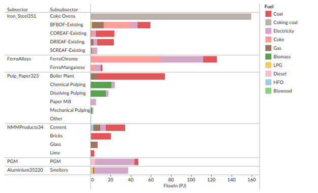
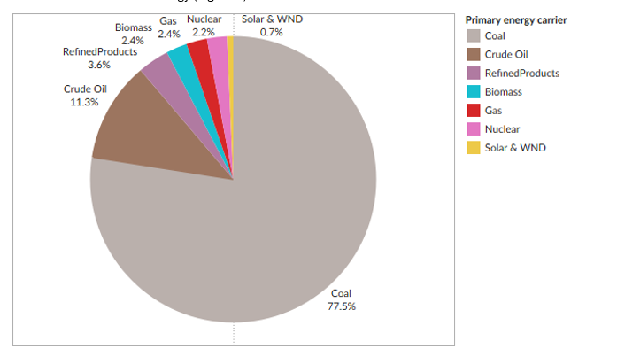

Welcome to the read-the-docs for the SATIM-eSAGE linked modelling framework.#
1. Introduction#
1.1 Project Overview#
This documentation serves as a comprehensive guide to SATIM-eSAGE, a linked modeling framework combines the SATIM (South African TIMES Model) and eSAGE (Energy South African General Equilibrium Model) to analyze the socioeconomic impacts of energy and climate policies in South Africa.The linked framework involves an iterative process of exchanging information between SATIM and eSAGE to produce comprehensive and consistent results.
Its purpose is to enhance transparency and accessibility to the model, widely utilized for policymaking and critical analysis. By doing so, it seeks to contribute more broadly to the advancement and utilization of energy systems models in developing countries.
Note
Here is a note! Cool!
1.2 Motivation#
The motivation behind the SATIM-eSAGE linked modeling framework lies in its ability to provide comprehensive and consistent results, thereby enhancing the analysis of energy and climate policies in South Africa. By combining SATIM and eSAGE, the framework enables a more nuanced examination of policies, considering their socioeconomic impacts. It addresses the need for a sophisticated tool to explore and assess different policy scenarios, shedding light on the trade-offs between mitigation and development objectives in the South African context.
1.3 The South Africa Times Model (SATIM)#
The South African Times Model (SATIM) is a a single-region, multi-sector, and multi-time period bottom-up TIMES model that represents the South African Energy system. It provides detailed representations of all economic sectors, each of which is adapted to best represent energy demand or supply within that sector. The South African Times Model (SATIM) evolved from a traditional TIMES (The Integrated MARKAL-EFOM System) model, adapting the framework to the South African context. It included unique characteristics such as residential energy access inequality, the use of multiple fuels within households, complex coal supply networks, and representation of Gas-to-Liquid and Coal-to-Liquid plants. This model serves as the foundation for computing the least-cost energy technology mix and investment plans, contributing valuable information to the linked modeling framework.
1.4 The Energy South Africa General Equilibrium model (eSAGE)#
eSAGE operates as a dynamic, recursive, economy-wide, multi-sector computable general equilibrium model. This model simulates the functioning of the South African economy, providing insights into the broader economic implications of energy and climate policies.The integration of both SATIM and eSAGE ensures a holistic analysis, capturing the intricate interplay between the energy sector and the broader economic landscape.
1.5 SATIMel-eSAGE link#
The linkages from SATIM to eSAGE involve alternate runs of the models, facilitating the exchange of information via data links. SATIM computes the least-cost energy technology mix and investment plan, transmitted to eSAGE for incorporation into its simulations. Conversely, economic indicators generated in eSAGE are fed back to SATIM for further optimization, resulting in a continuous and iterative process that aligns energy utilization and economic impacts in both models.This linked modeling framework offers a powerful capability to analyze diverse scenarios and policy options, providing crucial insights into the complex trade-offs between mitigation and development objectives in South Africa.
For further info, check out the Model Structure of SATIM, eSAGE, or the Model Linkage. Read information on Data collection in Data Inputs.
Note
Here is a note! Cool!
Acknowledgements#
The Energy Systems Research Group (ESRG) has been contracted, funded and supported by WWF South Africa (WWF-SA) to develop an evidence base to inform WWF-SA’s development of an Illustrative IEP.
1 Introduction#
WWF South Africa (WWF) have embarked on a process to equip stakeholders to engage effectively in the process of integrated energy planning, following the enactment of Section 6 of the National Energy Act of 2008 thereby mandating the Department of Minerals and Energy Resources (DMRE) to develop and update the official Integrated Energy Plan (IEP) for South Africa. The Energy Systems Research Group (ESRG) has been appointed by WWF to provide technical analysis and an evidence base to support WWF’s process of engagement with stakeholders for the IEP.
This methodological paper highlights the processes, assumptions and structures of the long-term energy systems modelling analysis that will be undertaken in this work to inform and develop the evidence base upon which stakeholders can engage with the IEP process.
1.1 Background#
Integrated energy planning is an analytical process through which interactions between production and use of energy, and the linkages between energy, macro-economic factors, and socio-economic objectives can be understood.
In South Africa, the 1998 White Paper on Energy Policy identified integrated energy planning as a key analytical framework for undertaking energy policy analysis and formulation, in order “to facilitate the optimal consumption of energy resources to meet social needs” (Department of Minerals and Energy, 1998). South Africa’s first IEP was published by the Department of Minerals and Energy (DME) in 2003 and was intended to provide a framework within which energy policy and development decisions could be made through analysis of costs and social and environmental impacts of different energy scenarios (DME, 2003).
The National Energy Act of 2008 established a legal basis for integrated energy planning in South Africa, with Section 6 of the Act mandating the Minister of Minerals and Energy (now Mineral Resources and Energy) to develop, review, and publish the IEP. The Act specifies objectives that the IEP must account for, including interlinkages with other sectoral plans and national policy objectives it must address, as well as guidance it must provide in terms of energy infrastructure investments and technology selection.
On 28 April 2023 the President issued a proclamation notice stating that Section 6 of the Act would come into operation as of 1 April 2024 (Presidency, 2023) thereby directing the DMRE to initiate the process for development of South Africa’s official IEP.
1.2 Integrated energy planning and the role of energy systems modelling#
Integrated energy planning involves detailed and comprehensive analysis of the energy sector, interaction between energy demand and energy supply, and linkages with the rest of the economy, and is used to form the basis of policy formulation and evaluation, and strategy development and implementation, to manage the demand and supply of energy to achieve desirable objectives (Eberhard, 1992). Whereas energy subsectors, such as electricity supply, have been typically analysed in isolation from other subsectors – for example, the Integrated Resource Plan (IRP) for electricity (DMRE, 2019 & 2024; Department of Energy (DoE), 2011) – an Integrated Energy Plan (IEP) considers how all components of the energy system interact with each other, how they respond to shifts in energy demand and energy efficiency, and how the energy sector affects and is affected by the rest of the economy, and by other socio-economic and environmental factors, objectives and limitations.
A comprehensive integrated energy plan must thus address how the energy sector and energy policy decisions interact with the economy, society, equity, and the environment. The National Energy Act of South Africa provides clear guidance for this, with Section 6(2) stating that:
“The Integrated Energy Plan must deal with issues relating to the supply, transformation, transport, storage of and demand for energy in a way that accounts for—
security of supply;
economically available energy resources:
affordability;
universal accessibility and free basic electricity;
social equity;
employment;
the environment;
international commitments;
consumer protection; and
contribution of energy supply to socio-economic development.”
The Energy Policy White Paper (DME, 1998) provides guidance on the roles and technical functions of integrated energy planning, of which the most important steps can be summarised as:
Interpreting the requirements of national social, economic, and environmental policies and objectives for the energy sector.
Analysing current and future energy demand needs in the context of technological evolution, industrialisation, and socio-economic growth and development objectives – including, for example, minimum universal energy access levels.
Analysing potential energy supply systems and technologies, as well as demand-side management measures (including energy efficiency), to meet the current and future energy demand, further contextualised by additional objectives or constraints – for example, achieving a net zero CO2 emissions energy system by 2050.
Analysing linkages between the energy sector and the macro-economy and vice versa.
Identifying where policy intervention is needed to direct the development of the energy sector toward the desired social, economic, and environmental objectives.
These questions pertain to the long-term future of the energy sector and its linkages to long-term social objectives, and integrated energy planning is a framework specifically for this long-term forward-looking context. Section 6(5) of the Act reflects this with the specification that the planning horizon for the IEP should be a minimum of 20 years.
In this way, integrated energy planning builds understanding of long-term energy futures through scenario analysis. Scenarios are designed to analyse the future energy sector on the basis of quantitative indicators that characterise long-term energy and energy-interlinked objectives and limitations.
These scenarios are then modelled in order to characterise potential pathways that might be taken to reach these long-term outcomes, accounting for possible variations, interventions (including policies and measures) and constraints along the way. In this way, long-term energy systems modelling is fundamental to integrated energy planning.
Different energy model frameworks can be applied for long-term energy analysis. For example, simulation models, such as LEAP, could be used to compare and contrast the long-term costs and emissions of various energy technology build pathways over the modelling horizon (e.g. Stone & Wiswedel, 2015). Another example is the use of the PLEXOS modelling software to analyse long-term electricity generation build-plans to respond to simulated electricity consumption and demand profile projections, as is performed by the DMRE and Eskom in the development of the Integrated Resource Plan (DMRE, 2024).
However effective integrated energy planning requires a model framework that analyses dynamic variations in both energy supply and energy demand, whereby the model can shift energy demand according to shifts in demand drivers (e.g. increased economic activity, increased process efficiency, etc.) and then shift energy supply to meet the changed demand. This is necessary because effective integrated energy planning is demand-led – i.e. it follows, in simple terms, the principle of first identifying the energy demand, and then identifying the energy supply mix to meet that demand.
ESRG’s SATIMGE modelling framework is uniquely able to perform this analysis for the South African context. It encompasses the South African TIMES Model (SATIM), which models South Africa’s entire energy system, from energy end-uses downstream up through primary energy extraction upstream, integrated with an economic CGE model for South Africa’s social accounting matrix (SAGE), which can analyse how socio-economic indicators at macro level respond to investments and shifts in the energy sector.
SATIMGE is thus ideally positioned to perform analysis to provide evidence-based inputs for engagement with integrated energy planning in South Africa.
1.3 Scope and limitations of this report#
This report provides an overview of the methodological approach that will be undertaken by the ESRG to support WWF in the development of an evidence-base to inform stakeholders in their prospective engagement with the IEP. More specifically, this report highlights how the SATIMGE modelling framework will be applied in the analysis of scenarios for the future energy sector and its interlinkages with desired long-term social, economic, and environmental objectives. To that end, the report proceeds as follows:
SATIMGE is introduced with an overview of its components and how they interlink.
South African energy demand sectors are described, in terms of how they are represented and modelled in SATIM both in terms of their current energy needs and consumption as well as how these may evolve in the long-term.
Energy supply and demand-side management options are described, also in terms of how they are currently set up in SATIM, and how the model determines long-term energy investment choices to meet future demand.
The method for indicators and scenario analysis is introduced, including an overview of a framework for collaborative scenario development as well as an initial description of indicators.
A list of key assumptions is provided which form the basis of drivers for the modelling analysis.
The report concludes with a summary of the methodological approach for the project, including highlighting the key indicators for the modelling work, and identifies key next steps to be undertaken in the project.
It should be noted that this report does not cover the following:
Policy analysis: whilst policy evaluation and gap analysis form a key component of integrated energy planning and will feature as part of the ongoing work of the project, this will not be covered in detail in this methodological report, as the focus here is primarily on the modelling methodology.
Developed scenarios and detailed indicators: this report outlines the framework, approach, and key indicators for scenario analysis; however, the actual development of scenarios is a collaborative process, involving all the relevant stakeholders, which will continue to unfold and form the basis of the next phase of work in this project. This report also does not document detailed indicators or data describing these, but these will be discussed in subsequent workshops and form the subject of a further report to inform WWF’s IEP engagement process.
Detailed modelling data: this report covers the methodology for the modelling, including detail on how energy demand and supply are characterised and calculated in each sector, as well as key driving assumptions, but does not provide a comprehensive reference of all the input data, assumptions, and technical structure of the underlying modelling mechanics. Recognising the importance of transparency, the ESRG is undertaking a separate and comprehensive process of model documentation to ensure that this information is publicly available and will be available to stakeholders for scrutiny as this work develops further.
2 Long-term energy systems modelling – SATIMGE#
The ESRG modelling framework consists primarily of two components:
A whole-system energy model called SATIM (the South African TIMES model), and
A Computable-General Equilibrium (CGE) economic model called SAGE.
These two models are linked together and solved iteratively, as outlined below. A more detailed description of SATIMGE will be available in forthcoming publications.
2.1 SATIM#
SATIM is a bottom-up energy systems optimisation model which finds least cost energy pathways to meet future energy demand given various technical, environmental, and other constraints.
SATIM is structured by disaggregating South Africa’s energy sector into:
Energy consumption (or ‘demand’), subdivided into sectors – residential, commercial, industrial, transport and agriculture.
Energy supply – electricity generation, liquid fuels refining, hydrogen production, and primary energy supply (imports/extraction).; and
Each demand sector is further disaggregated into subsectors (e.g. iron and steel, passenger transport, etc.) and eventually down to technology level (e.g. blast furnaces, private petrol sedans, etc.). Technologies are characterised with data on fuel use, cost, efficiency, emissions and other relevant parameters.
When running a scenario in SATIM, the model calculates annual projected energy demand based on macroeconomic drivers (GDP, population) and indicators (e.g. household income) and then ‘solves’ the least cost technology mix to meet that demand over the modelling horizon, accounting for any particular constraints such as emissions limits, technology availability, fuel prices, and others. SATIM’s base year is currently 2017 (i.e., initial energy demand and supply data for South Africa are based on the 2017 energy balance).
2.2 SAGE#
The CGE model of South Africa (SAGE) is a dynamic recursive, country level, economy wide model that simulates the functioning of the South African economy. SAGE provides a detailed and comprehensive representation of the South African economy including:
Up to 104 sectors and commodities
5 factors of production (capital and 4 labour groups)
12 household categories
Within each annual time slice SAGE is solved based on data and assumptions for population, productivity, and capital supply. Between periods SAGE is updated to reflect population growth, technical change, and capital accumulation. New capital formation is determined endogenously based on previous-period investment levels and the relative profit of the different sectors. Once invested, capital becomes sector specific.
Extremely long-term scenarios that involve significant deviations from baseline projections should include a significant role for technological change. SAGE has a restricted capability to make the technological change process endogenous, i.e. dependent on economic variables such as price signals, research and development, and investment while ensuring that long-term scenarios are technically viable.
2.3 Linked model#
The energy extended version of SAGE is linked to the full energy sector South African TIMES (SATIM) model. Combining the two models captures the details required from the energy systems modelling with economic analysis to assess the impact of energy system changes on various sectors, markets, and agents in the economy.
The models are run iteratively allowing information to be exchanged in both directions:
SATIM computes the least-cost energy technology mix based on assumptions about technology and fuel costs, as well as constraints such as demand and emissions, given an initial demand projection.
The resulting technology mix is then passed to SAGE, which incorporates the new energy supply and demand composition. Aggregate investment in SAGE is determined by assuming a macro adjustment process, where changes in aggregate final demand are shared proportionally across consumption, investment, and government spending.
SAGE thus provides new projections of economic indicators, which are then fed back to SATIM to update demand and for further optimisation.
This iterative process continues until indicators such as GDP stabilizes between iterations, which results in alignment in terms of energy utilisation, CO2 emissions, demand, price, and technology mix between the two models.
A high-level schematic of the SATIMGE architecture and process is shown below in Figure 1.
 Figure 1: SATIMGE overview
Figure 1: SATIMGE overview
3 Energy demand#
This section provides an overview of the major energy demand sectors of the South African economy, in terms of how they are modelled and analysed in SATIM. The five major demand sectors are:
Residential
Commercial
Industry
Transport
Agriculture
Within each sector, energy demand is expressed bottom-up by technology or fuel grouping, with sectors disaggregated into end-uses at technology level, depending on data availability. Growth and shifts in energy demand, including fuel switching and efficiency improvements, form the key building-block for future energy projections within the IEP framework.
3.1 Residential buildings#
The Residential sector in SATIM is structured to capture changes in fuel and technology use and energy service demands that follow rising income levels.
There are three income groups represented in SATIM:
Low income, which represents 45% of the population in 2017
Middle income (31% of the population)
High income (24% of the population)
Each income group is further disaggregated into a demand for energy services capturing energy consumption for lighting, cooking, space heating, refrigeration and a combination of other (mostly electrical) appliances, as shown in Table 1 (which also shows the drivers of household growth, energy service demands, fuel use and appliance ownership captured in the model). Each service demand is also characterized by a particular seasonal/diurnal profile.
Table 1: Modelling structure and disaggregation for the residential sector in SATIM
Disaggregation level |
Drivers |
|---|---|
Households: Low, Middle and High income groups |
Population, household size, GDP |
Energy Service Demands: Lighting, cooking, water heating, space heating and cooling, Refrigeration, Other |
Household income, electrification, |
Fuels: Wood, coal, paraffin, gas, electricity |
Household income, electrification, |
The classification of households into income groups and the primary fuel used by households for cooking, space heating and water heating draws primarily on the 2011 Census (StatsSA, 2011), while electrification assumptions are according to the National Development Plan (National Planning Commission, 2012).
Households in all income groups use a variety of fuels to meet their energy service needs and, particularly in middle and low income households, typically use more than one fuel type to meet energy services (e.g. both biomass and electricity for cooking) – a principle known as fuel stacking.
 Figure 2: Final energy demand to provide energy services in low, middle and high income households in SATIM
Figure 2: Final energy demand to provide energy services in low, middle and high income households in SATIM
Within SATIM, household energy service needs, such as lighting and cooking etc, are met by technologies such as LEDs or CFLs and electric or paraffin stoves. Technologies, and their assumed average efficiencies, are specific to the type of technology and fuel being used. For example: an electric geyser can be used to supply hot water at 75% efficiency, whereas wood used for water heating in low income households (open fire) has an efficiency of 11%. This allows us to capture the average energy efficiency of meeting energy service needs using different fuels and technologies as well as the impact that a shift in fuel or technology use will have on the demand for energy to supply energy services. Technology efficiencies can be specific to income groups, e.g. lower income households are more likely to have old and less efficient fridges. Efficiency levels also capture shifts between electrical appliances, for example the increased penetration of LEDs for lighting, or the uptake of combined-heat-and-power (CHP) and solar water heaters (SWH) for water heating.
The upward mobility of households from lower to middle and higher income groups, driven by growth in GDP, will cause an increase in electricity use in favour of other alternative fuels over time, as households increase their appliance ownership as their income grows. Increases in electricity use are however partially tempered by energy efficiency improvements in the sector, based on assumptions about efficacy of the Standards and Labelling programme and Minimum Energy Performance Standards (MEPS) for appliances (DMRE, 2022). Upward mobility of households is captured in the model by altering the share of households in each income group over time. The share of households in each income group is taken from SAGE.
However, under current projections not all households would be able to migrate out of the lower income group by 2050. Many of these households are currently in a state of energy poverty and may struggle to move away from the use of solid fuels without support.
3.2 Commercial Buildings#
The commercial buildings sector in SATIM includes wholesale, retail and motor trade services, warehouses and industrial spaces, office buildings, banking facilities, and other non-residential and government spaces including schools, hospitals, hotels, and recreational facilities. Public sector floor area, which primarily serves public services, includes public lighting and water services is also considered.
Commercial sector energy service demand is estimated based on the energy intensity of energy services required as a function of lettable floor area (PJ/m2) and is linked to growth in floor area and improvements in energy efficiency over time. Final energy demand is internally computed within SATIM, factoring in technology efficiency and penetration within the sector, as the model assumes that energy services in new buildings can be delivered more efficiently with newer technologies, while constraints on residual capacity and building design limit the adoption of newer technologies and other improvements in energy efficiency in older buildings.
Energy services are disaggregated into cooling, space heating, cooking, lighting, refrigeration, water heating, public lighting, public water supply, and other appliances. As with the residential sector, end-uses can be represented either by fuel or technology. Technology shares encompass the prevalence, activity levels, and efficiencies of different technology types supplying specific energy services. Figure 3 shows the final energy demand for each energy service represented in the model in 2017.
 Figure 3: Energy end-use consumption specified by fuel and generic end-use for Commerce (SATIM)
Figure 3: Energy end-use consumption specified by fuel and generic end-use for Commerce (SATIM)
In the long-term, commercial buildings in South Africa will likely undergo significant transformations driven by sustainability goals, equitable urban planning initiatives and technological advancements. Sustainable and energy-efficient designs may become more prevalent, incorporating passive architectural design elements that prioritise the use of ambient energy such as advanced insulation, high performance windows, airtightness, natural ventilation, and daylighting systems with heat recovery, as well as more thermally efficient building materials. Access to essential utilities like heating, cooling, and electricity will likely rely heavily on electrified, energy-efficient and sustainable solutions, reflecting enhanced environmental responsibility. In terms of specific systems, there will likely be a notable shift towards electric-based technologies for heating, cooking, water heating, and lighting, with an increasing reliance on renewable energy sources (Agbajor & Mewomo, 2024).
Changing occupancy patterns, including the adoption of flexible work arrangements and telecommuting, would also influence the demand for heating and cooling systems during traditional office hours. Occupants’ behaviour, guided by heightened energy conservation awareness, will likely further encourage responsible heating and cooling system usage. This can be captured in the model by adjusting the useful energy demand of affected energy services.
Regulatory frameworks are expected to evolve, emphasising optimisation and the integration of smart grid-type devices, which may be overseen by electricity grid operators. These developments would play a pivotal role in managing energy variability, enhancing storage, and optimising building energy use while aligning with sustainability objectives. Moreover, inclusive urbanisation strategies will address spatial inequalities by encouraging mixed-use developments and fostering social cohesion in urban planning initiatives. Additionally, we foresee an increased adherence to green building codes such as SANS10400 XA2 (SANS, 2013), accompanied by the introduction of energy endorsement labels for energy-efficient appliances. Minimum Energy Performance Standards (MEPS) should also be rigorously implemented to further promote energy efficiency and sustainability across the sector. MEPS tightening is captured as an improvement in the efficiency of technologies delivering energy services whereas the SANS is captured as a reduction in energy service needs in the model.
3.3 Industry#
Industry modelling in SATIM is generally split into two methodologies; one to represent large facilities and energy intensive industries, and the second to represent the industries which are generally smaller, more numerous, and spread out across the country. The sub-sectors for these categories are shown in Table 2:
Table 2: Industry subsectors as defined in SATIM
Methodology |
Industry Sub-Sector |
Description |
|---|---|---|
Methodology One: |
Iron and Steel |
All primary, and secondary producers of crude steel, coke production included here (which is sold to chrome industry) |
Ferro Alloys |
FerroChrome, and FerroManganese |
|
Aluminium |
One company and one facility in South Africa: South32’s Hillside smelter near Richard’s Bay. |
|
Pulp and paper |
||
Non-metallic minerals (NMM) |
Cement, bricks, lime, glass |
|
Platinum Group Metals (PGMs) |
Includes mining of the ores |
|
Methodology Two: |
Mining |
Includes coal mining, excludes: PGM ores. |
Chemicals |
This sector captures the energy use for chemicals, including petrochemicals, but not liquid fuels; the subsector is closely linked to, and dominated by, the operations of Sasol – see Appendix B for details on the chemicals sector |
|
PNFM: Other precious and non-ferrous metals |
Gold, copper, nickel, zinc, and others. |
|
Food and beverages |
Processing of agriculture products into food products, includes sugar industry |
|
General other manufacturing not covered elsewhere |
Production of general other goods (textiles, clothing, pots and pans etc.) |
Methodology One sectors are represented in SATIM by the process technologies specific to those industries, e.g. Blast Furnaces, cement kilns, paper mills, etc., as these technologies are generally well classified by their fuel use, energy intensities and operations in literature and other public resources, and some data for the local industries in South Africa are published. These sectors have specific demand tonnages: e.g. tonnes of cement produced in South Africa. Energy use breakdown for these sectors is shown for the base year (2017) in Figure 4.
Figure 4: Base year end-use energy consumption by fuel and technology for methodology-one industry subsectors (SATIM)
Methodology Two sectors are generally classified by their energy end use requirements; process heating, pumping, machinery, lighting and others, based on available literature, and this is calibrated with South African national energy balance data. Examples are shown for mining and chemicals sectors in Figure 5.
 Figure 5: Energy end-use consumption specified by fuel and generic end-use for Methodology Two sectors (SATIM)
Figure 5: Energy end-use consumption specified by fuel and generic end-use for Methodology Two sectors (SATIM)
The large energy intensive industries generally are dominated by production processes that are expensive to build and have a long economic life (sometimes 20 years or more). This aspect means these industries generally lock-in the energy usage characteristics going forward, and it also makes fuel (and technology) switching more challenging.
The two main end-uses of energy in the industrial sector are process heat and machinery operation. The latter is almost exclusively powered by electricity, while the former is supplied by several fuel sources including coal, gas, electricity, and liquid fuels.
In the future electricity could be used more for heating requirements than today, especially for low grade temperature requirements where heat pumps could be deployed to replace thermal fuels. But owing to the economic advantage of thermal fuels like coal, electricity will not easily or quickly replace these in much of low grade requirements and especially in medium to higher grade heat demands. Natural Gas could be used more extensively in industry, but this relies on gas infrastructure being developed in South Africa, and this would still need to compete against cheap coal available locally.
Some sectors may see fuel and technology switching such as hydrogen-based Direct Reduction of Iron (DRI) for steel production, and hydrogen derived from electrolysis of water using electricity may provide other high temperature process demands. However, hydrogen based technologies are likely to be limited to very few industries like steel, and chemicals, and these switches would require very large investments, and a degree of risk.
Owing to the rapid rise in electricity prices in the last 10 to 15 years in South Africa, industry has undertaken energy efficiency interventions to save costs. With loadshedding in recent years, and now a push for supplying their own power through IPP’s, and installed solar PV systems, energy efficiency would be a high priority, low hanging fruit, for economic reasons. This is likely to continue in the coming years, and should the national grid be transformed high levels of renewables, energy efficiency deployment would be crucial and potentially offer large returns to industries and help bolster the grid.
3.4 Transport#
The structure of the transport system in SATIM is shown at a high-level in Figure 6. The sector is disaggregated into passenger and freight transport, and further by mode – road or rail.
Freight road transport is similarly disaggregated by vehicle class (LCVs and HCVs class 1 to 9) and fuel (diesel, petrol, electricity or hydrogen). Freight rail is currently modelled using a mixture of diesel and electricity. Aviation is considered separately, with no distinction made between passenger and freight.
 Figure 6: Schematic of the transport sector as modelled in SATIM
Figure 6: Schematic of the transport sector as modelled in SATIM
Passenger road transport is disaggregated into private or public transport, by vehicle class therein (e.g. private sedan, minibus taxi, bus, etc.) and then by fuel. Passenger rail is assumed to be 100% electric. Passenger demand is measured using the ‘passenger-kilometre’ (pkm) metric, where 1 pkm is equivalent to 1 passenger travelling 1 kilometre. Passengers are classified by income level – high, medium and low – with assumptions for each group including:
proportion of private vehicle ownership,
number of private vehicles owned per person,
average occupancy of private vehicles when driven,
annual mileage of private vehicles
annual time budget for travelling (in private and public modes), and
average speed of private and public vehicles.
All of these data are computed and projected, based on economic drivers of GDP and population growth, to arrive at future passenger transport demand (pkms) by type of vehicle (private sedan, public BRT, public rail etc.). SATIM then determines the ‘optimal’ fuel type for new vehicle purchases for each year modelled to meet the demand, and the overall country-wide vehicle stock is updated accordingly.
Freight transport is modelled similarly to passenger transport. Freight transport demand is measured using the ‘tonne-kilometre’ (tkm) metric, where 1 tkm equals 1 tonne transported 1 kilometre. Road freight demand is divided into different commercial vehicle class (LCVs and HCV 1, 2, 3, up to 9). All new rail freight is assumed to be electric. SATIM determines tkm demand based on tonnage by vehicle class and typical delivery distance, to arrive at tkm and veh-km projections. As with passenger transport, the optimal fuel type mix is determined to meet annual tkm demand for each year modelled.
The key variables for transport modelling are projected costs of ‘new’ vehicle technologies – EVs and, potentially, hydrogen-cell fuelled vehicles – and fuel costs, particularly for ICE vehicles. For example, if we assume high petrol and diesel prices into the future, the switch to EVs is accelerated.
Regardless, it is highly likely that by 2050 a large share of transport will be electrified, based on current industry trends, signals from international markets about phasing out of ICEs, as well as the need to decarbonise. There may be a role for hydrogen fuelled vehicles in 2050 as well, but this is much more uncertain given the current early stages of development for this technology.
The role of public transport is particularly important for considering future integrated energy and transport systems. In SATIM, public transport use is currently governed by assumptions on persons’ time budget for travel against time and cost for meeting their travel demand using public transport systems, with further assumptions about the scale-up of future electric rail. Depending on these assumptions, future public transport systems scale up or remain at current proportions relative to private transport. For example, if public transport systems are more integrated, e.g. by reducing waiting times or walking distances to buses, minibuses, this would lower the ‘cost’ (monetary and time) and make public transport more appealing to private consumers.
Further analysis can also be undertaken to understand other behavioural factors, besides time and cost, that influence the choices of commuters and companies, as these choices have a material impact upon vehicle stocks and transport infrastructure investments. In this respect there are a few concerns: How do individuals and households respond to price signals in terms of capital cost, and operating cost (such as fuel costs) and non-price signals (such as to behavioural nudges, or communication campaigns), as well as how to companies respond to the same. Further details of transport modelling SATIM is described in Ahjum et al. (2020).
3.5 Agriculture#
Agriculture is a relatively small demand sector in South Africa and is not modelled at a high level of detail. Agriculture is modelled as a single sector in SATIM. Energy services captured within agriculture are heating, processing, irrigation, traction and “other”. Processing and other are supplied by electricity only, traction is supplied by diesel but can shift to electricity beyond 2025. Heating is supplied primarily by paraffin with a small amount coming from coal and can shift to electricity, gas or HFO beyond 2025. Irrigation is supplied primarily by electricity with a small amount supplied by diesel and can shift to 100% electricity by 2030. Figure 7 shows final energy demand for energy services in the agricultural sector in 2017.
 Figure 7: Energy end-use consumption specified by fuel and generic end-use for Agriculture (SATIM)
Figure 7: Energy end-use consumption specified by fuel and generic end-use for Agriculture (SATIM)
4 Energy supply#
Energy supply in SATIM is modelled from primary energy sourcing and extraction (e.g. coal mining) through conversion technologies (e.g. power plants and liquid fuels refineries) into secondary energy carriers (e.g. electricity, petroleum, diesel, etc.) that are then transported (or transmitted) and distributed to energy demand sectors and down to energy end-uses (as described in the previous section).
This section focuses on the energy supply sectors of SATIM, including primary energy extraction and import as well as secondary energy conversion in the electricity and liquid fuels sectors.
4.1 Primary energy#
Primary energy carriers used in South Africa consist predominantly of coal, biomass and imported crude oil and refined product, with small contributions of natural gas and nuclear fuel and a small but growing share of wind and solar energy (Figure 8).
Figure 8: Estimated proportions of primary energy supply for South Africa in 2019
4.1.1 Coal#
The majority of South Africa’s primary energy is sourced from coal mined in South Africa, which serves three major uses:
Supply to the existing coal power plant fleet to produce electricity
Supply to Sasol’s coal-to-liquids value chain for conversion into liquid fuels as well as to fuel the production of petrochemicals and other chemical products (see Appendix B)
Exports to overseas markets, including Europe and Asia (mainly India)
Coal supply to power stations is modelled in SATIM based on data disaggregated at a level that shows:
Mines, or group of mines, supplying individual power stations, with estimates of the grade of coal (i.e., calorific value or net heating content of each tonne of coal supplied)
Tonnage of coal supplied to power stations based on their demand (i.e. how much electricity they are producing, with factors for conversion efficiency and auxiliary power losses)
Costs drawn from actual data on contracts that exist between suppliers and Eskom, factoring type and length of contracts as well as transport and other costs
This data provides a precise estimate of coal consumption and costs for the power sector. However, additional sundry factors such as inconsistencies with the grade of coal supplied are not captured. Broader assumptions are made regarding the costs, heating grades and quantities of coal supplied to Sasol’s coal-to-liquids (CTL) facilities.
Coal export quantities are modelled exogenously – i.e., fixed export levels are assumed and applied into the modelling analysis, without optimisation – with the future of coal exports dependent on assumptions about commodity prices and future demand for coal, particularly in a world that is aiming to reduce carbon emissions. Currently the existing logistical challenges with coal exports through Richards Bay Coal Terminal are not fully accounted in the CGE model.
4.1.2 Renewable energy (incl. bioenergy)#
Solar and wind energy are used in SATIM exclusively for power generation. The availability of wind and solar plants follows seasonal and diurnal patterns. This is captured with more or less detail depending on the temporal resolution specified.
Bioenergy is distinguished in SATIM into three different types, with use predominantly in industry and the residential sector:
Biochar
Biomass
Biowood
Biofuels (liquid biomass), such as bioethanol and biodiesel, are not currently included in SATIM model analysis, however the capability to analyse these fuels is built within the SATIM architecture.
4.1.3 Natural gas#
The natural gas sector in SATIM comprises of indigenous supply/ extraction, imports, transformation, transmission and distribution, and final consumption demand. Here, ‘gas’ is both methane rich gas, produced by Sasol, and natural gas (not LPG). Natural gas is supplied via pipeline or LNG terminal to the gas network (transmission and distribution) for distribution. Gas sources in the model currently include:
Southern Mozambique via existing pipeline
Coastal gas supplied by LNG
Indigenous Gas (Ibhubezi)
Natural gas is also supplied to gas power plants and other sectors, namely refineries/chemicals, industry, commercial and residential.
Gas is used in these sectors for energy demand or transformation. Where natural gas is a commodity input as a feedstock, it is classified under ‘transformation’. For example, natural gas is ‘transformed’ in gas power plants to the commodity output electricity. And where gas is utilised for energy or heating it is classified under ‘demand’. For example, gas boilers in the residential and commercial sectors are supplied gas from the gas network for end use heating/energy requirements.
Sasol utilises natural gas as a feedstock. And in its production of synthetic fuel and chemicals it produces methane rich gas which is supplied to industry via gas infrastructure/network.
Gas could be used more extensively in the different sectors (for example as a substitute for coal in industry for process-heating); however, this depends on gas infrastructure being further developed in South Africa.
4.1.4 Imports#
South Africa imports the majority of its liquid fuels for domestic consumption, both in the form of crude oil for domestic refineries, as well as (increasingly) in the form of refined product such as petrol and diesel. The only domestic primary energy source of liquid fuels is from coal, via Sasol’s CTL facilities.
Liquid fuel imports are sensitive to the availability and operation of domestic crude oil refinery capacity, which is expected to be phased out completely by 2034 (currently Astron’s Cape Town refinery is the only coastal crude oil refinery in operation in the country), as well as the availability of CTL capacity and production. The balance of refined product demand that cannot be met from crude oil, CTL or GTL (gas-to-liquids) refineries has to be imported.
The long-term future of liquid fuels imports is highly sensitive to assumptions about the future transport sector (including the extent to which electric and hydrogen vehicles replace conventional ICEs), which in turn are sensitive to future projections about international fuel prices (see the section on Assumptions below).
4.2 Energy carriers#
Primary energy inputs as described above are converted into secondary and final energy (‘usable’ energy), predominantly in of two forms: electricity and liquid fuels.
4.2.1 Electricity#
The power sector is structured in SATIM in three components: Generation, Transmission and Distribution, as illustrated in Figure 9. SATIM is currently configured as a single node model (as per IRP 2023).
 Figure 9: Simplified schematic of the power sector as modelled in SATIM
Figure 9: Simplified schematic of the power sector as modelled in SATIM
Generation ‘technologies’ in SATIM are modelled in two ways:
Existing technologies: This comprises all generation plant (>1 MW) operational as of 2012, including the coal PF power fleet (excluding Medupi and Kusile), Koeberg nuclear power station, open-cycle gas turbines (running off diesel), pumped storage facilities, and the small contributions from industrial embedded coal generation as well as hydro. Each large power plant is modelled separately with its own availability and retirement profile. Cahora Bassa is included as existing import.
‘New’ technologies: This comprises actual build since 2012 – i.e. Medupi, Kusile, additional OCGT and pumped storage capacity, and initial rollout of utility renewable IPPs – as well as new-build technology options for future generation development. The latter comprises general technology data and applies to both grid and on-site technology options.
Generation technologies are characterised and governed by a range of key data, including:
Conversion efficiency (i.e., the amount of energy a power plant can produce relative to primary energy input, e.g. typically around 35% for coal power stations)
Fixed costs, including capital costs (‘CAPEX’, specified as an ‘overnight’ cost in ZAR per kW capacity) and fixed operational & maintenance (O&M) costs.
Variable costs, including fuel costs (which vary by plant, based e.g. on specific coal contract data for Eskom’s coal fleet) and variable O&M costs.
Lead time for plant construction (i.e. estimate number of years for construction up to the point of commercial operation). This is used by the model to calculate the interest during construction (assuming the global discount rate).
Economic life – number of years for which the plant can operate.
Availability – i.e. proportion of the year for which the plant is available for generation (i.e. not shut down for maintenance or forced outages). For RE plants the availability follows seasonal and diurnal patterns. This is captured with more or less detail depending on the temporal resolution specified. Availability of RE plants for new plants built between 2025 and 2032 is set lower than what could be achieved, to capture the current bottlenecks in the transmission infrastructure.
Emissions factors by emission species, including greenhouse gases (CO2, CH4, etc.) and air pollutants (SOx, NOx, and particulate matter).
First Year and Maximum Build Rate – “First Year” takes account of lead times to determine when the earliest year a particular option can become available. Maximum build rate is specified using a growth limit, which is a scenario parameter.
New build options (beyond committed builds) include conventional nuclear, wind, solar PV (grid and rooftop), solar thermal plants, coal, diesel and gas, hydro, imports (including INGA and other potential imports from the Southern African Power Pool), pumped storage and battery technologies.
A reserve margin on centrally produced electricity is specified exogenously as a constraint, as follows:
Where CCi = Capacity Credit of grid-based electricity generation technology i and RM is the exogenously specified reserve Margin. In SATIM solar PV, solar thermal plants without storage and wind are by default conservatively assumed to be unable to contribute to the reserve margin (i.e. CC = 0).
For utility-scale grid connected generation, since the country is modelled as a single node, transmission is modelled as a single technology linking centralised/high voltage electricity (ELCC) to medium voltage levels (ELC). The medium voltage electricity is distributed to each sector using a different technology to capture the different losses incurred in the different sectors. Distributed generation is handled separately and is a relatively new feature that has been added to SATIM to capture the emerging off-grid market – see Section 5.2 below.
4.2.2 Liquid fuels#
The liquid fuels/refineries sector comprises of crude refineries, Sasol CTL, PetroSA GTL (gas-to-liquids), imports and exports. The refineries sector is represented in SATIM by process technologies specific to each refinery.
Fuel from crude oil and coal is modelled with commodity inputs, outputs, conversion data, and cost data for the different refineries in operation. Refineries (i.e. ENREF, SAPREF and PetroSA GTL) which have recently closed, are ‘switched off’ in the model. Furthermore, new inland and coastal plants, each with associated inputs and costs, can be selected by the model based on overall SATIMGE computation demands and constraints. Supply sector commodities are split into coastal and inland.
Green jet fuel is a recent addition to the refineries sector.
Table 3: Fuels from Refineries, GTL and CTL
Crude Refineries and GTL |
CTL |
|---|---|
AvGas |
Avgas |
Diesel |
Diesel |
HFO |
Methane Rich Gas |
Kerosene/jet fuel/paraffin |
Kerosene/Jet Fuel/paraffin |
LPG |
LPG |
Gasoline |
Gasoline/Petrol |
Other non-energy |
Non energy (alcohols) |
Demand vs supply
Liquid fuel is imported to balance and meet national liquid fuel requirements above what can be supplied by local refineries. Liquid fuel demand is also met by increased imports when refineries are shut down/ decommissioned in SATIM. Liquid fuels traded include Aviation gasoline (Avgas), diesel and petrol (gasoline).
5 Cross-cutting energy industries and technologies#
5.1 Energy efficiency and demand-side management#
Energy efficiency is considered in all demand sectors in the model to varying degrees depending on the opportunities identified in each sector. End-use energy efficiency is considered in three ways, namely through:
Technology efficiency, for example if the energy efficiency of a standard electric geyser improves;
Technology or process change, for example if CFLs are replaced by LEDs for more efficient lighting; and
Energy service demand reduction, for example if residential heating demand reduces due to installation of insulation.
All demand-side technologies included in the model are assigned an efficiency. These efficiencies are end-use, technology, and sub-sector specific and can vary over time in response to technology improvements that occur as a result of general technology learning, or through direct policy intervention. They can therefore be adjusted depending on the energy efficiency gains anticipated in a scenario and are specified exogenously in each scenario.
The exogenously specified levels of energy efficiency take into account policies such as the National Energy Efficiency Strategy (NEES) and the Green Transport Strategy. In all cases it is assumed that mandated minimum energy performance standards are achieved and applied in the reference case.
Demand response (DR), where a consumer changes their load profile shape to balance demand on the grid, is currently not considered in the model. Demand response aggregation can act as a virtual power plant and is therefore an attractive way of balancing supply and demand on the electricity grid. Demand response can be achieved through a forced intervention, for example using geyser control devices, or through voluntary means for example through time of use tariffs. It is possible to allow some endogenous shifting of the profile of specific technologies within the model, however the degree to which consumers may respond to incentives is currently not known, and the parameterisation of DR response is therefore difficult.
5.2 Distributed electricity generation and consumption#
Distributed Generation (DG), especially from Photo Voltaic (PV) systems has grown aggressively over the past years particularly as a source of electricity for the residential sector. Components of Solar systems (Inverters, Photovoltaic cells, and batteries) were imported by South Africa at consistently increasing rates from the first quarter of 2021 to the second quarter of 2023. Over this period, the value of quarterly imports of these components increased from just over $100 million US Dollars in the second quarter of 2021, to just over 1.7 billion US Dollars, in the second quarter of 2023, a 16-fold increase (Figure 10).
Figure 10: Imports to South Africa of solar PV and storage components over time (SALGA, 2023)
Uptake of this stock has almost certainly been driven by the same factors across all major sectors of the economy, and include:
Rising price of grid electricity relative to the costs (fixed capital and marginal costs) of PV systems. (see for example Borenstein, 2017, Chesser, et al, 2018). Electricity prices, as a whole, have increased at a rate that has consistently been above CPI. For example, Eskom’s aggregate standard tariffs had increased by 408% by the end of 2023, as against an increase of 196% for the CPI basket of goods over the same period. Against this, costs of the elements in PV systems have been falling (see for example Feldman et al, 2023), and, once installed produce electricity at very near to zero marginal cost.
Diminishing hours of grid electricity supply due to steadily longer hours of loadshedding, which disrupt businesses and households. Within this context the largely uninterrupted flow of energy from PV systems has become even more relatively attractive, and, without a doubt, has driven both commercial and industrial concerns, and households, to adopt Solar PV.
Among the total Distributed Generation installed in South Africa, the Residential Sector was estimated by SAPVIA (the South African Photovoltaic Industry Association) to account for 621 MWp (megawatts at peak production) of a total national PV peak production capacity of 5 659 MWp by the end of the third quarter 2023 which is the latest period for which this data is currently available. SAPVIA currently estimates, based on extrapolation, that this has increased to 954MWp, however, acknowledges wide bands of uncertainty around this figure.
Many residential PV systems are unregistered with municipal authorities; the City of Cape Town, for example, estimates that only 50% of residential PV systems have applied for registration, are being processed for registration, or have been registered, with SAPVIA also expressing a great deal of uncertainty. Given this, it is difficult to have certainty about the amount of battery storage (MWh) compared to PV generating capacity (MWp) in residential PV systems in South Africa. However, SAPVIA use a confidence interval of a ratio of residential generation to storage of between 1:1 and 1:1.5. Employing these ratios as lower and upper bounds yields an estimate of residential Battery Energy Storage Systems (BESS) installed in South Africa for the first quarter of 2023 of between 621 MWh and 931.5MWh, and between 954 MWh and 1 431 MWh at present, although there is greater uncertainty about the figures for the status at present.
Going forward, it is likely that the relative cost of grid supply, as well as the quality (for example, incidence of voltage spikes from stressed medium voltage network infrastructure) and quantity of that supply (hours of loadshedding) will remain important drivers of PV adoption. One factor is the increasing adoption of PV systems by developers and owners of blocks of flats. Large developments of blocks of flats, from lower income developers to developers targeting middle to slightly higher income brackets now build their developments to include PV systems. Partly this is to comply with current building regulations, specifically SANS 10400XA, and Green Building Standards, such as EDGE. Forecasts of residential PV uptake will need to include this as a material factor.
A further consideration will be market saturation of PV systems beginning to interact with the capital cost of those systems more meaningfully. Efforts are underway across the industry, and this project, to assess this using industry reports and other data resources, such as satellite imagery. Nevertheless, the extent to which the strong growth in residential PV installations will continue is uncertain.
Commercial & Industrial Distributed Generation (DG), accounted for 3 174 MWp out of 5 659 MWp of PV system energy in South Africa by the end of the first quarter of 2023 (the most recent data available at time of writing. This is just over 56% of total PV capacity, indicating how important commercial and industrial clients have been for PV system uptake in South Africa.
Increased uptake of distributed solar PV systems is captured in the model for each sector individually. It is possible to extend this to the sub-sector level where appropriate. PV uptake is captured at this level to allow for differences in the capital costs, largely driven by installation costs, and capacity factors. Within the model all sector investments in PV systems have a higher capital cost than grid based PV systems, however they provide electricity directly to the sectors and do not see the transmission losses that all grid-based generation sees. DG PV systems in all sectors currently have the same capacity factor, which is assumed to be lower than the capacity factor of grid PV systems.
5.3 Hydrogen#
Hydrogen is the most abundant element in the universe. On Earth however, hydrogen comes mostly in the form of dihydrogen monoxide (water). Hydrogen is used predominantly in industries, and mostly for the production of Ammonia which is used for fertilizer production. Hydrogen is also used for refining petroleum products – notably for reducing the sulphur content of diesel (WHA International, 2023 – see Figure 11).
Figure 11: Current global uses of hydrogen (WHA International, 2023)
Globally, natural gas reforming is the most economical and widely used method to produce hydrogen. This process involves mixing natural gas with high temperature steam to produce a syngas consisting of hydrogen, CO, and CO2. In South Africa however, the majority of hydrogen production is located at SASOL’s synthetic fuels and chemicals production facilities, and coal (not natural gas) is the main source of hydrogen (Bergh et al., 2022).
Outlook for hydrogen technologies
There is recent interest worldwide in the applications of technologies utilising hydrogen that is produced from electrolysis of water using renewable electricity, called ‘green hydrogen’. Hydrogen can be used as an energy carrier, or as it is in most cases today, a chemical feedstock.
Green hydrogen production has the potential to decarbonise the carbon intensive chemicals industry, the steel industry, industries with high temperature requirements, and potentially some applications in transportation either with hydrogen directly (using a fuel cell), or with synthetic fuel produced with biocarbon and hydrogen. Hydrogen once produced, can be stored as a form of energy storage and later turned back into electricity (or heat) – potentially aiding a power system with large amounts of renewable electricity generation.
Hydrogen in SATIM: There are several sectors, processes, and commodities linked to the use and production of hydrogen. The table below lists all the sectors and processes currently in SATIM that either produce, use, or are related closely to hydrogen, now and into the future, as shown in
Table 4: Current and future hydrogen processes included in SATIM
Sector in SATIM |
Process |
Current or future capacity |
Comment |
|---|---|---|---|
Chemicals - ammonia |
Ammonia production from gas feedstock |
Current |
linked to SASOL |
Ammonia production from coal feedstock |
Current |
linked to SASOL |
|
Ammonia production using Hydrogen |
Future |
||
Chemicals - methanol |
Methanol production from gas feedstock |
Current |
linked to SASOL |
Methanol production from hydrogen and carbon |
Future |
Inputs are green hydrogen, and carbon from direct air capture, or CCU |
|
Chemicals – overall |
Generic heat requirement for chemical industry processes using coal and gas |
Current |
Most heat requirements in the chemicals industry today are met with coal, and gas |
Generic heat requirement for chemical industry processes using hydrogen |
Future |
Hydrogen can provide high grade heat |
|
Iron and Steel |
Hydrogen based Direct Reduction of Iron (DRI) for steel production |
Future |
Large scale worldwide investment is currently flowing into developing this technology. This technology is largely based off a natural gas process of DRI. |
Mining |
Generic heating requirement using hydrogen |
Future |
|
Non-metallic minerals |
Generic heating requirement using hydrogen |
Future |
Mostly this is for unproven brick kilns that require high temperatures |
Generic industry other |
Generic heating requirement using hydrogen |
Future |
|
Synthetic aviation fuel |
Production of aviation kerosene from hydrogen and carbon |
Future |
This is Fischer-Tropsch based process, with hydrogen, and carbon from air capture or CCU. |
Hydrogen for vehicles |
Hydrogen fuel cell vehicles for commercial heavy duty vehicle, and for some public passenger busses |
Future |
A myriad of vehicle options for different freight categories, mostly fuel cell based |
Hydrogen production |
Large scale centralised hydrogen production using PEM electrolysers |
Future |
|
Large scale centralised hydrogen production using alkaline electrolysers |
Future |
6 Scenario development and analysis#
Long-term energy systems scenario analysis is fundamental to integrated energy planning. Scenarios can be defined to illustrate potential futures of the energy system (encompassing demand and supply), in terms of a range of characteristics or outcomes that may be achieved or realised over the duration of the modelling horizon.
Scenarios can also be defined to identify and analyse the impact of potential policy measures, market developments, or other uncertain or unknown variables, on overall outcomes as well as the pathways to reach these outcomes. For example, scenarios could analyse the effects of a policy of subsidising private electric vehicle purchases on overall passenger transport demand, fuel use and emissions. In developing an integrated energy plan, scenarios allow for the analysis of potential future energy systems and characteristics within the context of a range of factors, constraints, opportunities, and desired outcomes.
A key objective for this work is to develop with stakeholders an understanding of shared desirable long-term policy objectives, including social and economic development and environmental safeguarding (as specified, for example, in Section 6(2) of the National Energy Act), and to transform these into a series of tangible objectives that can be quantified and modelled (and to identify where objectives cannot be quantified, and have to be handled by other means). Through this approach, scenarios can be developed and analysed to determine how desired objectives may be achieved, as well as to analyse how certain factors or unknowns may impact the pathways to reach these objectives.
6.1 Scenario planning framework#
The approach to scenario analysis in this work began with an initial Inception workshop held by WWF with key stakeholders, in which stakeholders were asked to begin to describe and characterise key features and outcomes they would want to emerge from an Integrated Energy Plan. Stakeholders identified a wide range of different objectives, both in terms of energy demand, energy supply and interlinked areas of the economy and society. Table 8 in Appendix C provides a list of the suggested inputs and objectives for consideration in IEP development, as put forward by stakeholders at the Inception Workshop (WWF, 2023).
The list of inputs can be summarised into an initial (and not necessarily exhaustive) list of objectives that stakeholders identify as being important for the Integrated Energy Plan to consider, as follows (Table 5) :
Table 5: Summarised objectives for an Integrated Energy Plan
Theme | Objectives |
|---|---|
Energy security |
|
Energy efficiency |
|
Equity and just transition |
|
Environmental protection |
|
Climate change mitigation |
|
It’s important to emphasise the role of collaborative and inclusive scenario development in ensuring the Integrated Energy Plan accounts for all sectors of South African society, including all social, economic and developmental concerns. The list in Table 5 is therefore not static and can and should be updated to accommodate additional views and objectives from stakeholders, as the process develops over time.
Translating these objectives into quantifiable outcomes that can be analysed through long-term scenario modelling requires the use of indicators, by which objectives and outcomes can be measured and monitored.
6.2 Indicators#
This section introduces the initial approach undertaken by the ESRG to analyse and apply indicators in this work. Further development and elaboration of indicators is required and will be forthcoming in subsequent reports and engagements for this project.
Indicators can be used to represent the list of objectives in Table 5 as quantitative measures and outcomes that can be modelled in the SATIMGE framework. The linked model – combining the SATIM energy model with the SAGE economy model – makes SATIMGE uniquely able to analyse the interactions between objectives in the energy sector, such as energy security, energy efficiency and decarbonisation, and socio-economic objectives, such as reducing unemployment and poverty and promoting localisation.
Table 6 provides an initial list of potential indicators that can be analysed and assessed in SATIMGE modelling, in alignment with the themes and objectives for an integrated energy plan as listed in Table 5. This list is not necessarily exhaustive and may be updated and revised depending on whether additional objectives are raised by stakeholders, as well as model development.
Table 6: Selected quantitative indicators for IEP themes and objectives
Theme | Indicators |
|---|---|
Energy security |
|
Energy efficiency |
|
Equity and just transition |
|
Environmental protection |
|
Climate change mitigation |
|
7 Key assumptions#
7.1 Population growth#
Population growth is included in the model exogenously, the United Nations’ world population prospect probabilistic projections are used as estimates for population growth (UN, 2022). The median population growth scenario was chosen and imputed into the model. Figure 12 below represents the median population growth projections taken from the work population prospects.
Figure 12: Median population growth assumptions for South Africa (UN, 2022)
7.2 Economic growth#
Economic growth is endogenous in the model and adjusts in response to economic “shocks”. A reference GDP growth trajectory is however, imputed into the model by adjusting total factor productivity over the time horizon. This in combination with a simple capital allocation step in the CGE will determine the base growth trajectories for each sector.
These base growth trajectories are then kept constant for all scenarios (except in cases that force higher or lower reference growth). In the short term (up to 2031) GDP growth in the CGE is calibrated to match the growth projections in the 2024 budget review’s economic outlook (National Treasury, 2024). Beyond this economic growth is assumed to gradually increase to 3.5% in the mid-2030s and then hover around this percentage to 2050.
In each scenario the CGE is exposed to various shocks which differ from the reference scenario (e.g. more investment in the power sector to achieve more CO2 emission reductions). These shocks come from processing results of the SATIM model, that is endogenously itself responding to, for example, a CO2 reduction cap (‘shock’) applied to the power sector. SATIM is able to provide a more robust picture of what the power sector should look like given a particular CO2 trajectory, than the CGE would be able to achieve by itself.
In this way the model provides an estimate of the GDP impact of the CO2 shock, or other policy interventions applied to the model, and in the context of other given assumptions (e.g. fixed amount of capital, a particular trajectory for FDI, a different mix of local vs imported components for the RE build-out, etc.).
7.3 Fuel costs#
Coal costs are drawn from data on prices and contract arrangements for coal supplied to Eskom (see section 4.1.1 above).
Current and future oil, gas and liquid fuel cost estimates are derived from IEA data, with future prices dependent on future global scenarios (e.g. there is a significant different in projected oil prices under a ‘Net Zero Energy’ world relative to a ‘Current policies’ world).
7.4 Carbon tax#
The main tax applied in SATIMGE modelling is South Africa’s domestic carbon tax, and is modelled in two ways:
Using current tax levels, based on South Africa’s official carbon tax taking current allowances into account.
Using projected tax levels based on government proposals for ramping up the carbon tax to internationally recommended price levels.
South Africa’s official carbon tax sits at R144 per tonne. However, after accounting for allowances the effective tax rate sits at approximately R30 per tonne. In the 2022 budget the government proposed to strengthen the carbon tax policy the government plans to raise the carbon tax rate to at least US\(20/t CO<sub>2</sub> by 2026, to US\)30/t CO2 by 2030, and accelerating to higher levels up to US$120/t CO2 beyond 2050. Thus, the two approaches to modelling the carbon tax are to (1) maintain the tax at the current levels or (2) ramp it up in accordance with the National Treasury’s 2022 proposal.
7.5 Emissions factors#
Emissions factors for each type of emission (GHG and air pollutant) are drawn from Eskom and IPCC literature. Combustion emissions factors vary in the model by fuel type, and are summarised as follows:
Table 7: Emissions factors applied in SATIM (Units: kilotonne per PJ)
Emission |
Coal |
Gas |
AvGas |
Diesel |
Gaso-line |
HFO |
Kero-sene |
LPG |
Wood |
|---|---|---|---|---|---|---|---|---|---|
Carbon dioxide (CO2) |
96.25 |
56.1 |
70 |
74.0667 |
69.3 |
77.4 |
72.9 |
63.1 |
0 |
Methane (CH4) |
0.001 |
0.001 |
0.003 |
0.003 |
0.003 |
0.003 |
0.003 |
0.003 |
0.015 |
Nitrous Oxide (N2O) |
0.0014 |
0.0001 |
0.0006 |
0.0006 |
0.0006 |
0.0006 |
0.0006 |
0.0001 |
0.0008 |
Sulphur gases (SOx) |
0.6262 |
0 |
0.0467 |
0.2529 |
0.0467 |
1.5291 |
0.0459 |
5.409 |
0.03 |
Nitrogen gases (NOx) |
0.3 |
0.15 |
0.3 |
0.2 |
0.6 |
0.2 |
0.2 |
0.01246 |
0.15 |
Carbon monoxide (CO) |
0.02 |
0.02 |
0.1 |
0.015 |
8 |
0.01 |
0.01 |
0.182 |
2.6 |
Non-methane volatile organic compounds (NMVOCs) |
0.005 |
0.005 |
0.05 |
0.005 |
1.5 |
0.005 |
0.005 |
0.0237 |
0.04 |
Particulate Matter 10µm (PM10) |
0.046 |
0.12 |
7.6 Discount rate#
The discount rate is set at 8.2 percent and matches the discount rate used by the DMRE in the Integrated Energy Plan. Although it is possible to allocate technology specific discount rates, in each sector, and to change these discount rates over time, a single, consistent, “global” discount rate is currently applied in the model.
8 Residential Sector#
Overview#
The Residential sector in SATIM is structured to capture changes in fuel and technology use and energy service demands that follow rising income levels. There are three income groups represented in SATIM:
Low income: Represents 45% of the population in 2017
Middle income: 31% of the population
High income: 24% of the population
Table 8.1: Average annual income per income group in the residential sector.
Household Income Group |
Average Income (R) |
|---|---|
Low Income |
0 - 19,200 |
Middle Income |
19,201 - 76,800 |
High Income |
76,801 - |
Show code cell source
import pandas as pd
import matplotlib.pyplot as plt
import requests
from io import BytesIO
# URL of the Excel file in the GitHub repository
file_url = 'https://github.com/SavanhaJadedk/Satim-test-book-1.1/raw/main/docs/Excel%20workbooks/Scen_DMD_PRJ.xlsx'
# Download the file
response = requests.get(file_url)
response.raise_for_status() # Ensure the request was successful
# Read the Excel file into a pandas DataFrame
with BytesIO(response.content) as file:
df = pd.read_excel(file, sheet_name='RES', header=None)
# Extract years (row 21, columns E to K which corresponds to index 20, columns 4 to 10 in 0-indexed pandas)
years = df.iloc[20, 4:11].values
# Extract income groups (rows 22-24, column C which corresponds to index 21-23, column 2 in 0-indexed pandas)
income_groups = df.iloc[21:24, 2].values
# Extract corresponding population per income group for each year (rows 22-24, columns E to K which corresponds to index 21-23, columns 4 to 10 in 0-indexed pandas)
population_data = df.iloc[21:24, 4:11].values
# Create a DataFrame for plotting
data = pd.DataFrame(population_data.T, columns=income_groups, index=years)
# Plot the area plot with professional formatting
plt.figure(figsize=(10, 6))
# Plot the area plot
data.plot(kind='area', stacked=True, figsize=(10, 6), color=['#1f77b4', '#ff7f0e', '#2ca02c'])
# Set title and labels with larger font size
plt.title('Projected Population Distribution Across Household Income Groups (2017 - 2070)', fontsize=16)
plt.xlabel('Year', fontsize=14)
plt.ylabel('Population (Million)', fontsize=14)
# Set legend with larger font size
plt.legend(title='Income Group', fontsize=12)
# Set grid lines with a light gray color
plt.grid(True, linestyle=':', linewidth=0.5, color='lightgray')
# Change font
#plt.rcParams.update({'font.family': 'Arial', 'font.size': 12})
# Add caption
caption = 'Figure 8.1: Projected population distributions across household income groups from 2017 to 2070.'
plt.figtext(0.5, -0.1, caption, wrap=True, horizontalalignment='center', fontsize=10, style='italic')
# Adjust layout to make room for the caption
plt.tight_layout(rect=[0, 0.03, 1, 0.95])
plt.show()
<Figure size 1000x600 with 0 Axes>

Show code cell source
import pandas as pd
import matplotlib.pyplot as plt
# Data
data = {
'Year': [2017, 2020, 2030, 2040, 2050, 2060, 2070],
'Low Income': [71, 80, 85, 90, 95, 95, 95],
'Middle Income': [83, 90, 95, 95, 100, 100, 100],
'Overall Electrification': [82, 87, 93, 96, 99, 99, 99]
}
# Create DataFrame
df = pd.DataFrame(data)
df.set_index('Year', inplace=True)
# Plot area chart for low and middle income with dotted line overlay for overall electrification
plt.figure(figsize=(10, 6))
# Plot area chart for low income
plt.fill_between(df.index, df['Low Income'], color='lightblue', alpha=0.5, label='Low Income')
# Plot area chart for middle income
plt.fill_between(df.index, df['Middle Income'], color='lightgreen', alpha=0.5, label='Middle Income')
# Plot dotted line overlay for overall electrification
plt.plot(df.index, df['Overall Electrification'], linestyle='--', color='black', label='Overall Electrification')
# Set labels and title
plt.title('Projected Electrification Rates for Low and Middle Income Groups')
plt.xlabel('Year')
plt.ylabel('Electrification Rate (%)')
# Add grid
plt.grid(True)
# Add legend
plt.legend()
# Show plot
plt.show()

Energy Service Demands#
Each income group is further disaggregated into a demand for energy services capturing energy consumption for lighting, cooking, space heating, refrigeration, and a combination of other (mostly electrical) appliances, as shown in Table 8.2 (which also shows the drivers of household growth, energy service demands, fuel use, and appliance ownership captured in the model). Each service demand is also characterized by a particular seasonal/diurnal profile.
(include profiles if possible)
Modelling Structure#
The classification of households into income groups and the primary fuel used by households for cooking, space heating, and water heating draws primarily on the 2011 Census (StatsSA, 2011), while electrification assumptions are according to the National Development Plan (National Planning Commission, 2012). Households in all income groups use a variety of fuels to meet their energy service needs and, particularly in middle- and low-income households, typically use more than one fuel type to meet energy services (e.g., both biomass and electricity for cooking) – a principle known as fuel stacking.
Lower income groups have more prominent use of liquid (paraffin) and solid fuels (coal and wood) and lower demand for energy services supplied by electricity due to lower appliance ownership levels. The fuel stacking and lower energy service demands of the low- and middle-income households in the model reflect the difficulties that these households face in terms of both access to and the affordability of using electricity to supply energy services. The energy sources, and quantity, supplying each end use in 2017 is shown in Figure 8.3. This is illustrated in further detail in Figures 8.4 to 8.6.
Table 8.2: Modelling structure and disaggregation for the residential sector in SATIM
Parameter |
Disaggregation level |
Drivers |
|---|---|---|
Households |
Low, Middle, and High income groups |
Population, household size, GDP |
Energy Service Demands |
Lighting, cooking, water heating, space heating and cooling, refrigeration, other |
Household income, electrification, policies and regulations such as building standards, behavior change |
Fuels and appliances |
Wood, coal, paraffin, gas, electricity (televisions, washing machines, dishwashers, etc.) |
Household income, electrification, policies and regulations such as fuel subsidies, appliance standards |
Show code cell source
from IPython.display import Image, display
import requests
# Base URL of the images folder in the GitHub repository
base_url = 'https://github.com/SavanhaJadedk/Satim-test-book-1.1/raw/IEP-Documentation/docs/Images/08Res/'
# Specify the filename of the image you want to display
image_filename = 'Res 2017 fuel use.png'
# Construct the full URL of the image
image_url = base_url + image_filename
# Download the image
response = requests.get(image_url)
# Check if the request was successful
if response.status_code == 200:
# Display the image in the notebook
display(Image(response.content))
else:
print("Failed to download the image.")
Figure 8.3: Final energy demand for the residential sector by household income group, energy end-use, and fuel for the SATIM base year of 2017.
Technologies and Efficiencies#
Within SATIM, household energy service needs, such as lighting and cooking, are met by technologies such as LEDs or CFLs (subject to 2024 regulations on minimum luminous efficacy) and electric or paraffin stoves. Technologies, and their assumed average efficiencies, are specific to the type of technology and fuel being used. For example, an electric geyser can be used to supply hot water at 75% efficiency, whereas wood used for water heating in low-income households (open fire) has an efficiency of 11%. This allows us to capture the average energy efficiency of meeting energy service needs using different fuels and technologies as well as the impact that a shift in fuel or technology use will have on the demand for energy to supply energy services.
Technology efficiencies can be specific to income groups, e.g., lower-income households are more likely to have old and less efficient fridges. Efficiency levels also capture shifts between electrical appliances, for example, the increased penetration of LEDs for lighting, or the uptake of combined-heat-and-power (CHP) and solar water heaters (SWH) for water heating. The upward mobility of households from lower to middle- and higher-income groups, driven by growth in GDP, will cause an increase in electricity use in favor of other alternative fuels over time, as households increase their appliance ownership as their income grows. Increases in electricity use are however partially tempered by energy efficiency improvements in the sector, based on assumptions about the efficacy of the Standards and Labelling programme and Minimum Energy Performance Standards (MEPS) for appliances (DMRE, 2022).
Household Mobility#
Upward mobility of households is captured in the model by altering the share of households in each income group over time. The share of households in each income group is taken from SAGE. However, under current projections, not all households would be able to migrate out of the lower income group by 2050. Many of these households are currently in a state of energy poverty and may struggle to move away from the use of solid fuels without support.
Residential Demand Illustrated#
Figures 8.4, 8.5, and 8.6 show SANKEY diagrams of residential consumption of fuels to provide energy services in the three income groups in 2023. The SANKEYs give an indicative indication of the energy used by households in each income group, the energy used to supply energy services, as well as the efficiency at which energy services are met in each income group. For example, it shows that low-income households use biomass primarily for cooking and that the efficiency of cooking is low. In addition to biomass, low-income households are also using electricity, coal, and a small amount of paraffin to cook. Energy service demands are represented in terms of useful energy and are therefore not directly comparable across energy services but are comparable across income groups.
Show code cell source
from IPython.display import Image, display
import requests
# Base URL of the images folder in the GitHub repository
base_url = 'https://github.com/SavanhaJadedk/Satim-test-book-1.1/raw/IEP-Documentation/docs/Images/08Res/'
# Specify the filename of the image you want to display
image_filename = 'Res LowIncome Sankey.png'
# Construct the full URL of the image
image_url = base_url + image_filename
# Download the image
response = requests.get(image_url)
# Check if the request was successful
if response.status_code == 200:
# Display the image in the notebook
display(Image(response.content))
else:
print("Failed to download the image.")
Figure 8.4: SANKEY Diagram for Low Income households.
Show code cell source
from IPython.display import Image, display
import requests
# Base URL of the images folder in the GitHub repository
base_url = 'https://github.com/SavanhaJadedk/Satim-test-book-1.1/raw/IEP-Documentation/docs/Images/08Res/'
# Specify the filename of the image you want to display
image_filename = 'Res MiddleIncome Sankey.png'
# Construct the full URL of the image
image_url = base_url + image_filename
# Download the image
response = requests.get(image_url)
# Check if the request was successful
if response.status_code == 200:
# Display the image in the notebook
display(Image(response.content))
else:
print("Failed to download the image.")
Figure 8.5: SANKEY Diagram for Middle Income households.
Show code cell source
from IPython.display import Image, display
import requests
# Base URL of the images folder in the GitHub repository
base_url = 'https://github.com/SavanhaJadedk/Satim-test-book-1.1/raw/IEP-Documentation/docs/Images/08Res/'
# Specify the filename of the image you want to display
image_filename = 'Res HighIncome Sankey.png'
# Construct the full URL of the image
image_url = base_url + image_filename
# Download the image
response = requests.get(image_url)
# Check if the request was successful
if response.status_code == 200:
# Display the image in the notebook
display(Image(response.content))
else:
print("Failed to download the image.")
Figure 8.6: SANKEY Diagram for High Income households.
References#
References#
Ahjum, F., Godinho, C., Burton, J., McCall, B. and Marquard, A. 2020. A low-carbon transport future for South Africa: Technical, Economic and Policy considerations. https://www.climate-transparency.org/wp-content/uploads/2020/08/CT-Low-Carbon-Transport-SA-DIGITAL.pdf.
Bergh, C., McCall, B., Merven, B. and von Blottnitz, H. 2022. TIPS forum 2022: Towards a just transition the role of industrial policy an analysis of the Secunda coal-to-liquids facility in the context of South Africa’s energy transition.
Borenstein, S., 2017. Private net benefits of residential solar PV: The role of electricity tariffs, tax incentives, and rebates. Journal of the Association of Environmental and Resource Economists, 4(S1), pp.S85-S122.
Chesser, M., Hanly, J., Cassells, D. and Apergis, N., 2018. The positive feedback cycle in the electricity market: Residential solar PV adoption, electricity demand and prices. Energy Policy, 122, pp.36-44.
Department of Energy(DoE). 2011. Electricity Regulations on the Integrated Resource Plan 2010-2030. https://www.energy.gov.za/irp/2010/irp2010.pdf.
Department of Environmental Affairs. 2013. GHG inventory for South Africa 2000-2010.
Department of Mineral Resources and Energy (DMRE). 2019. Integrated Resource Plan 2019. https://www.energy.gov.za/irp/2019/IRP-2019.pdf.
Department of Mineral Resources and Energy (DMRE). 2024. Publication for Comments: Integrated Resource Plan, 2023. https://www.gov.za/sites/default/files/gcis_document/202401/49974gon4238.pdf.
Department of Minerals and Energy (DME), 1998. White Paper on the Energy Policy of the Republic of South Africa. December 1998. https://www.energy.gov.za/files/policies/whitepaper_energypolicy_1998.pdf.
Department of Minerals and Energy (DME), 2003. Integrated Energy Plan for the Republic of South Africa. 19 March 2003. https://www.energy.gov.za/files/media/explained/statistics_intergratedenergyplan_2003.pdf.
DMRE, NRCS and SANEDI. 2022. A User Guide to Mandatory Minimum Energy Performance Standards (MEPS) and Compulsory Energy Efficiency Labelling. https://www.sanedi.org.za/advertised-bids/March 2024/South African MEPS and Energy Efficiency labeling Guideline.pdf
Eberhard, A. 1992. Integrated energy planning for widening access to basic energy services in South Africa. http://hdl.handle.net/11427/22652.
Favour D. Agbajor, Modupe Cecilia Mewomo, Green building research in South Africa: A scoping review and future roadmaps, Energy and Built Environment, Volume 5, Issue 2, 2024, Pages 316-335, ISSN 2666-1233, https://doi.org/10.1016/j.enbenv.2022.11.001.
Feldman, D, Dummit, K, Zuboy, J, Margolis, R. (2023). National Renewable Energy Laboratory, April 27, 2023. Spring 2023: Solar Energy Update. https://www.nrel.gov/docs/fy23osti/86215.pdf
National Energy Act, 2008 (Act No. 34 of 2008). Government Gazette. Vol. 521, No. 31638. Cape Town. https://www.gov.za/sites/default/files/gcis_document/201409/316381263.pdf.
Merven, B., Hartley, F., McCall, B., Burton, J., Schers, J. 2019. Improved representation of coal supply for the power sector for South Africa. https://sa-tied.wider.unu.edu/sites/default/files/pdf/SATIED_WP84_Merven_Hartley_McCall_Burton_Schers_October_2019.pdf.
National Planning Commission. 2012. National Development Plan 2030. https://www.gov.za/sites/default/files/gcis_document/201409/ndp-2030-our-future-make-it-workr.pdf.
National Treasury. 2024. Budget 2024. https://www.treasury.gov.za/documents/National Budget/2024/.
NBI. 2019. Just Transition and Climate Pathways Study for South Africa Decarbonising South Africa’s Petrochemicals and Chemicals Sector 2 Just Transition and Climate Pathways Study for South Africa Acknowledgements. 1–36. Available: https://www.nbi.org.za/wp-content/uploads/2021/10/NBI-Chapter-2-Decarbonising-South-Africas-Petrochemicals-and-Chemicals-Sector.pdf.
Presidency, 2023. Proclamation Notice 118 of 2023 by the President of the Republic of South Africa: Commencement of Section 6 of the National Energy Act, 2008 (Act No. 34 of 2008). https://www.gov.za/sites/default/files/gcis_document/202304/48480-proc118.pdf.
Rustomjee, Z., Crompton, R., Almorie, M., Mehlomakulu, B. & Steyn, G. 2007. Possible reforms to the fiscal regime applicable to windfall profits in South Africa ’ s liquid fuel energy sector , with particular reference to the synthetic fuel industry A discussion document for public comment Embargoed for Publication before 2pm Thu. Available: https://static.pmg.org.za/docs/2007/070223liquid.pdf.
SALGA (South African Local Government Association), 2023. Status of Embedded Generation in South African Municipalities. December, 2023. South African Local Government Association. (https://www.salga.org.za/SALGA Energy Summit 2018/Energy Summit Web/Document/Status of Small Scale Embedded Generation.pdf)
SANS. 2013. Energy Usage & Sustainability (SANS 10400X & XA). https://www.sans10400.co.za/energy-usage/.
StatsSA. 2011. 2011 Census products. https://www.statssa.gov.za/?page_id=3955.
Stone, A. and Wiswedel, S. 2013. Modelling the urban energy future of Sub-Saharan Africa. https://www.africancityenergy.org/uploads/resource_150.pdf.
WHA International, 2023. Top Industrial Uses of Hydrogen, and the Need for Industrial Hydrogen Safety. https://wha-international.com/hydrogen-in-industry/.
WWF South Africa, 2023. Integrated Energy Plan: Scenario Co-Creation, 23 November 2023.
United Nations, 2022. World Population Prospects. https://population.un.org/wpp/Download/Standard/MostUsed/.
Annex 1#
Technologies#
Table A1: Technologies comprising the power sector in SATIM.
| Technology Code | Technology Description | Activity Unit | Capacity Unit | Timeslice level (CTSLvl) | Sets | Vintage | |
|---|---|---|---|---|---|---|---|
| 1 | ETCLECAMD-E | CAMDEN | PJ | GW | DAYNITE | ELE | NO |
| 2 | ETCLEGROO-E | GROOTVLEI | PJ | GW | DAYNITE | ELE | NO |
| 3 | ETCLEKOMA-E | KOMATI | PJ | GW | DAYNITE | ELE | NO |
| 4 | ETCLEARNO-E | ARNOT | PJ | GW | DAYNITE | ELE | NO |
| 5 | ETCLEDUVH-E | DUVHA | PJ | GW | DAYNITE | ELE | NO |
| 6 | ETCLEHEND-E | HENDRINA | PJ | GW | DAYNITE | ELE | NO |
| 7 | ETCLEKEND-E | KENDAL | PJ | GW | DAYNITE | ELE | NO |
| 8 | ETCLEKRIE-E | KRIEL | PJ | GW | DAYNITE | ELE | NO |
| 9 | ETCLELETH-E | LETHABO | PJ | GW | DAYNITE | ELE | NO |
| 10 | ETCLEMAJD-E | MAJUBA DRY | PJ | GW | DAYNITE | ELE | NO |
| 11 | ETCLEMAJW-E | MAJUBA WET | PJ | GW | DAYNITE | ELE | NO |
| 12 | ETCLEMATI-E | MATIMBA | PJ | GW | DAYNITE | ELE | NO |
| 13 | ETCLEMATL-E | MATLA | PJ | GW | DAYNITE | ELE | NO |
| 14 | ETCLETUTU-E | TUTUKA | PJ | GW | DAYNITE | ELE | NO |
| 15 | ETCLEKELB-E | KELVIN B | PJ | GW | DAYNITE | ELE | NO |
| 16 | ETODSGT-E | OCGT liquid fuels Existing | PJ | GW | DAYNITE | ELE | NO |
| 17 | ERHYD-E | Hydro Existing South Africa | PJ | GW | DAYNITE | ELE | NO |
| 18 | ERHYD-I | Hydro Existing Region | PJ | GW | DAYNITE | ELE | NO |
| 19 | ETNUC-E | Nuclear Existing | PJ | GW | SEASON | ELE | NO |
| 20 | EPTSTO-E | Pump Storage All Existing - Single Storage Tech | PJ | GW | DAYNITE | PRE,STGTSS | NO |
| 22 | ETCLEPFSS-E | Sasol SSF Coal Plant | PJ | GW | WEEKLY | ELE | NO |
| 23 | ETCLEPFSI-E | Sasol Infrachem Coal Plant | PJ | GW | WEEKLY | ELE | NO |
| 25 | ETCLEMEDU-N | MEDUPI | PJ | GW | DAYNITE | ELE | NO |
| 26 | ETCLEKUSI-N | KUSILE | PJ | GW | DAYNITE | ELE | NO |
| 27 | ETCLEWATE-N | Generic Waterberg Coal Plant | PJ | GW | DAYNITE | ELE | NO |
| 28 | ETCLE-CCS-N | Generic Waterberg Coal Plant with CCS | PJ | GW | DAYNITE | ELE | NO |
| 29 | EPTSTO-N | Pumped Storage New Ingula - Single Storage Tech | PJ | GW | DAYNITE | PRE,STGTSS | NO |
| 30 | ETODSGT-N | DOE Peakers | PJ | GW | DAYNITE | ELE | NO |
| 31 | ETCLDFB-N | Fluidised Bed Combustion Coal | PJ | GW | DAYNITE | ELE | NO |
| 32 | ERHYD-N | Micro hydro | PJ | GW | DAYNITE | ELE | NO |
| 33 | ETNUC-N | Nuclear Mid | PJ | GW | DAYNITE | ELE | NO |
| 34 | ERSOLTC09-N | Solar Central Receiver 09 hrs storage | PJ | GW | DAYNITE | ELE | NO |
| 35 | ERSOLPCF-N | Solar PV Fixed | PJ | GW | DAYNITE | ELE | NO |
| 36 | ERSOLPCT-N | Solar PV tracking | PJ | GW | DAYNITE | ELE | NO |
| 37 | ERWNDH-N | Wind | PJ | GW | DAYNITE | ELE | NO |
| 38 | ERHYDGIW-I | Grand Inga | PJ | GW | DAYNITE | ELE | NO |
| 39 | ETGICGT-N | Open Cycle Gas Turbine - LNG | PJ | GW | DAYNITE | ELE | NO |
| 40 | ETHGNGT-N | Hydrogen Turbine or FuelCell | PJ | GW | DAYNITE | ELE | NO |
| 41 | ETGICCC-N | Combined Cycle Gas Turbine - LNG | PJ | GW | DAYNITE | ELE | NO |
| 42 | ETGICCC-CCS-N | Combined Cycle Gas Turbine - LNG with CCS | PJ | GW | DAYNITE | ELE | NO |
| 43 | ETGICEN-N | Gas Engines - LNG | PJ | GW | DAYNITE | ELE | NO |
| 44 | ERBIO-N | Biomass municipal waste | PJ | GW | DAYNITE | ELE | NO |
| 45 | ERBIG-N | Landfill gas | PJ | GW | DAYNITE | ELE | NO |
| 46 | ESTSUTL | Utility Scale Storage - 4hrs | PJ | GW | DAYNITE | PRE,STGTSS | NO |
| 48 | ERSOLPRA-N | Solar PV rooftop Agriculture | PJ | GW | DAYNITE | ELE | NO |
| 49 | ERSOLPRM-N | Solar PV rooftop Mining | PJ | GW | DAYNITE | ELE | NO |
| 50 | ERSOLPRC-N | Solar PV rooftop commercial | PJ | GW | DAYNITE | ELE | NO |
| 51 | ERSOLPRR-N | Solar PV rooftop residential | PJ | GW | DAYNITE | ELE | NO |
| 52 | ERSOLPRI-N | Solar PV rooftop Industry | PJ | GW | DAYNITE | ELE | NO |
| 53 | ETGASENSS-N | Sasol SSF Gas Plant | PJ | GW | DAYNITE | ELE | NO |
| 54 | ETGASENSI-N | Sasol Infrachem Gas Plant | PJ | GW | DAYNITE | ELE | NO |
| 56 | EDILS | Interruptible Supply | PJ | GW | DAYNITE | ELE | NO |
| 57 | EDMLR | Manual Load Reduction (load shedding) | PJ | GW | DAYNITE | ELE | NO |
| 59 | MINCSARNOVRS | Coal Supply for Arnot-various | PJ | PJa | ANNUAL | XTRACT,PRE | NO |
| 60 | MINCSCAMDVRS | Coal Supply for Camden-various | PJ | PJa | ANNUAL | XTRACT,PRE | NO |
| 61 | MINCSDUVHSER | Coal Supply for Duvha-Seriti | PJ | PJa | ANNUAL | XTRACT,PRE | NO |
| 62 | MINCSDUVHVRS | Coal Supply for Duvha-various | PJ | PJa | ANNUAL | XTRACT,PRE | NO |
| 63 | MINCSGROOVRS | Coal Supply for Grootvlei-various | PJ | PJa | ANNUAL | XTRACT,PRE | NO |
| 64 | MINCSHENDVRS | Coal Supply for Hendrina-various | PJ | PJa | ANNUAL | XTRACT,PRE | NO |
| 65 | MINCSKENDS32 | Coal Supply for Kendal-South 32 | PJ | PJa | ANNUAL | XTRACT,PRE | NO |
| 66 | MINCSKENDVRS | Coal Supply for Kendal-various | PJ | PJa | ANNUAL | XTRACT,PRE | NO |
| 67 | MINCSKOMAVRS | Coal Supply for Komati-various | PJ | PJa | ANNUAL | XTRACT,PRE | NO |
| 68 | MINCSKRIESER | Coal Supply for Kriel-Seriti | PJ | PJa | ANNUAL | XTRACT,PRE | NO |
Input Commodities#
Table A2: The input commodities and fuels included in SATIM.
| Commodity Code | Commodity Description | Commodity Unit | Commodity Set(Csets) | Timeslice level (CTSLvl) | |
|---|---|---|---|---|---|
| 0 | ZDUMETRANS | Dummy Commodity for ETRANSDUM | PJ | NRG | ANNUAL |
| 2 | PWRCLEARNO | Coal for ARNOT Power Plant | PJ | NRG | ANNUAL |
| 3 | PWRCLECAMD | Coal for CAMDEN Power Plant | PJ | NRG | ANNUAL |
| 4 | PWRCLEDUVH | Coal for DUVHA Power Plant | PJ | NRG | ANNUAL |
| 5 | PWRCLEGROO | Coal for GROOTVLEI Power Plant | PJ | NRG | ANNUAL |
| 6 | PWRCLEHEND | Coal for HENDRINA Power Plant | PJ | NRG | ANNUAL |
| 7 | PWRCLEKEND | Coal for KENDAL Power Plant | PJ | NRG | ANNUAL |
| 8 | PWRCLEKOMA | Coal for KOMATI Power Plant | PJ | NRG | ANNUAL |
| 9 | PWRCLEKRIE | Coal for KRIEL Power Plant | PJ | NRG | ANNUAL |
| 10 | PWRCLELETH | Coal for LETHABO Power Plant | PJ | NRG | ANNUAL |
| 11 | PWRCLEMAJU | Coal for MAJUBA DRY Power Plant | PJ | NRG | ANNUAL |
| 12 | PWRCLEMATI | Coal for MATIMBA Power Plant | PJ | NRG | ANNUAL |
| 13 | PWRCLEMATL | Coal for MATLA Power Plant | PJ | NRG | ANNUAL |
| 14 | PWRCLETUTU | Coal for TUTUKA Power Plant | PJ | NRG | ANNUAL |
| 16 | PWRCLEKUSI | Coal for KUSILE Power Plant | PJ | NRG | ANNUAL |
| 17 | PWRCLEMEDU | Coal for MEDUPI Power Plant | PJ | NRG | ANNUAL |
| 19 | OHF | Oil HFO | PJ | NRG | ANNUAL |
| 20 | OKE | Oil Kerosene | PJ | NRG | ANNUAL |
| 21 | ELCC | Electricity | PJ | NRG | DAYNITE |
| 22 | ELC | Electricity to be Distributed | PJ | NRG | DAYNITE |
| 23 | ELCD | Electricity Demand | PJ | NRG | DAYNITE |
| 24 | AGRELC | Agriculture Electricity | PJ | NRG | DAYNITE |
| 25 | TRAELC | Transport Electricity | PJ | NRG | DAYNITE |
| 26 | IFAELC | Industry-FA-Electricity | PJ | NRG | DAYNITE |
| 27 | IFBELC | Industry-FB-Electricity | PJ | NRG | DAYNITE |
| 28 | IISELC | Industry-IS-Electricity | PJ | NRG | DAYNITE |
| 29 | IISHHELC | Industry-IS-Electricity for HDRI | PJ | NRG | DAYNITE |
| 30 | IMIELC | Industry-MI-Electricity | PJ | NRG | DAYNITE |
| 31 | INFELC | Industry-NF-Electricity | PJ | NRG | DAYNITE |
| 32 | INMELC | Industry-NM-Electricity | PJ | NRG | DAYNITE |
| 33 | IOTELC | Industry-OT-Electricity | PJ | NRG | DAYNITE |
| 34 | IPPELC | Industry-PP-Electricity | PJ | NRG | DAYNITE |
| 35 | ICPELC | Chemicals Electricity | PJ | NRG | DAYNITE |
| 36 | RESELC | Residential Electricity | PJ | NRG | DAYNITE |
| 37 | INDELC | Industry Electricity | PJ | NRG | DAYNITE |
| 38 | COMELC | Commerce Electricity | PJ | NRG | DAYNITE |
| 39 | UPSELC | Supply Electricity | PJ | NRG | DAYNITE |
| 40 | PWROHF | Power Oil HFO | PJ | NRG | ANNUAL |
| 41 | PWROKE | Power Oil Kerosene | PJ | NRG | ANNUAL |
| 42 | PWRODS | Power Sector Diesel | PJ | NRG | ANNUAL |
| 43 | PWRGIC | Power Sector Coastal Gas | PJ | NRG | ANNUAL |
| 44 | PWRGAS | Power Sector Inland Gas | PJ | NRG | ANNUAL |
| 45 | PWRHGN | Power Sector Hydrogen | PJ | NRG | ANNUAL |
| 46 | PWRHYD | Hydro Resource | PJ | NRG | ANNUAL |
| 47 | PWRSOL | Solar Resource | PJ | NRG | ANNUAL |
| 48 | PWRWND | Wind Resource | PJ | NRG | ANNUAL |
| 49 | PWRNUC | Nuclear Fuel | PJ | NRG | ANNUAL |
| 50 | PWRBIO | Biomass Fuel | PJ | NRG | ANNUAL |
| 51 | PWRBIG | Bagasse Fuel | PJ | NRG | ANNUAL |
| 52 | PWRCLE | Power Sector Load Grade Coal | PJ | NRG | ANNUAL |
| 53 | UPSCLE | Supply Sector Load Grade Coal | PJ | NRG | ANNUAL |
| 54 | INDCLE | Industry Sector Load Grade Coal | PJ | NRG | ANNUAL |
| 55 | PWRCLD | Power Sector Discard Coal | PJ | NRG | ANNUAL |
| 56 | PWRENV | For tracking environmental Levy | KT | ENV | ANNUAL |
| 57 | PWRWAT | Water for Power Sector | PJ | NRG | ANNUAL |
| 58 | PWRSOXS | Power Sector Sulphur gases South Africa | KT | ENV | ANNUAL |
| 59 | PWRNOXS | Power Sector Nitrogen gases South Africa | KT | ENV | ANNUAL |
| 60 | PWRPM10 | Power Sector Particulate Emissions | KT | ENV | ANNUAL |
| 61 | PWRCO2S | Power Sector Carbon Dioxide South Africa | KT | ENV | ANNUAL |
| 62 | PWRCH4S | Power Sector Methane South Africa | KT | ENV | ANNUAL |
| 63 | PWRN2OS | Power Sector Nitrous Oxide Emissions | KT | ENV | ANNUAL |
| 64 | PWRCMOX | Power Sector CMOX South Africa | KT | ENV | ANNUAL |
| 65 | PWRNMVS | Power Sector NMVS Emissions | KT | ENV | ANNUAL |
| 66 | CO2SF | Fugitive Emissions CO2 | KT | ENV | ANNUAL |
| 67 | CH4SF | Fugitive Emissions CH4 | KT | ENV | ANNUAL |
Annex 2#
Fuels#
Note
Check the hide-cell/hide-input/remove-cell/remove-input functionality.
Table A2: The commodities and fuels included in the power sector of SATIM.
| Commodity Code | Commodity Description | Commodity Unit | Commodity Set(Csets) | Timeslice level (CTSLvl) | |
|---|---|---|---|---|---|
| 0 | ZDUMETRANS | Dummy Commodity for ETRANSDUM | PJ | NRG | ANNUAL |
| 2 | PWRCLEARNO | Coal for ARNOT Power Plant | PJ | NRG | ANNUAL |
| 3 | PWRCLECAMD | Coal for CAMDEN Power Plant | PJ | NRG | ANNUAL |
| 4 | PWRCLEDUVH | Coal for DUVHA Power Plant | PJ | NRG | ANNUAL |
| 5 | PWRCLEGROO | Coal for GROOTVLEI Power Plant | PJ | NRG | ANNUAL |
| 6 | PWRCLEHEND | Coal for HENDRINA Power Plant | PJ | NRG | ANNUAL |
| 7 | PWRCLEKEND | Coal for KENDAL Power Plant | PJ | NRG | ANNUAL |
| 8 | PWRCLEKOMA | Coal for KOMATI Power Plant | PJ | NRG | ANNUAL |
| 9 | PWRCLEKRIE | Coal for KRIEL Power Plant | PJ | NRG | ANNUAL |
| 10 | PWRCLELETH | Coal for LETHABO Power Plant | PJ | NRG | ANNUAL |
| 11 | PWRCLEMAJU | Coal for MAJUBA DRY Power Plant | PJ | NRG | ANNUAL |
| 12 | PWRCLEMATI | Coal for MATIMBA Power Plant | PJ | NRG | ANNUAL |
| 13 | PWRCLEMATL | Coal for MATLA Power Plant | PJ | NRG | ANNUAL |
| 14 | PWRCLETUTU | Coal for TUTUKA Power Plant | PJ | NRG | ANNUAL |
| 16 | PWRCLEKUSI | Coal for KUSILE Power Plant | PJ | NRG | ANNUAL |
| 17 | PWRCLEMEDU | Coal for MEDUPI Power Plant | PJ | NRG | ANNUAL |
| 19 | OHF | Oil HFO | PJ | NRG | ANNUAL |
| 20 | OKE | Oil Kerosene | PJ | NRG | ANNUAL |
| 21 | ELCC | Electricity | PJ | NRG | DAYNITE |
| 22 | ELC | Electricity to be Distributed | PJ | NRG | DAYNITE |
| 23 | ELCD | Electricity Demand | PJ | NRG | DAYNITE |
| 24 | AGRELC | Agriculture Electricity | PJ | NRG | DAYNITE |
| 25 | TRAELC | Transport Electricity | PJ | NRG | DAYNITE |
| 26 | IFAELC | Industry-FA-Electricity | PJ | NRG | DAYNITE |
| 27 | IFBELC | Industry-FB-Electricity | PJ | NRG | DAYNITE |
| 28 | IISELC | Industry-IS-Electricity | PJ | NRG | DAYNITE |
| 29 | IISHHELC | Industry-IS-Electricity for HDRI | PJ | NRG | DAYNITE |
| 30 | IMIELC | Industry-MI-Electricity | PJ | NRG | DAYNITE |
| 31 | INFELC | Industry-NF-Electricity | PJ | NRG | DAYNITE |
| 32 | INMELC | Industry-NM-Electricity | PJ | NRG | DAYNITE |
| 33 | IOTELC | Industry-OT-Electricity | PJ | NRG | DAYNITE |
| 34 | IPPELC | Industry-PP-Electricity | PJ | NRG | DAYNITE |
| 35 | ICPELC | Chemicals Electricity | PJ | NRG | DAYNITE |
| 36 | RESELC | Residential Electricity | PJ | NRG | DAYNITE |
| 37 | INDELC | Industry Electricity | PJ | NRG | DAYNITE |
| 38 | COMELC | Commerce Electricity | PJ | NRG | DAYNITE |
| 39 | UPSELC | Supply Electricity | PJ | NRG | DAYNITE |
| 40 | PWROHF | Power Oil HFO | PJ | NRG | ANNUAL |
| 41 | PWROKE | Power Oil Kerosene | PJ | NRG | ANNUAL |
| 42 | PWRODS | Power Sector Diesel | PJ | NRG | ANNUAL |
| 43 | PWRGIC | Power Sector Coastal Gas | PJ | NRG | ANNUAL |
| 44 | PWRGAS | Power Sector Inland Gas | PJ | NRG | ANNUAL |
| 45 | PWRHGN | Power Sector Hydrogen | PJ | NRG | ANNUAL |
| 46 | PWRHYD | Hydro Resource | PJ | NRG | ANNUAL |
| 47 | PWRSOL | Solar Resource | PJ | NRG | ANNUAL |
| 48 | PWRWND | Wind Resource | PJ | NRG | ANNUAL |
| 49 | PWRNUC | Nuclear Fuel | PJ | NRG | ANNUAL |
| 50 | PWRBIO | Biomass Fuel | PJ | NRG | ANNUAL |
| 51 | PWRBIG | Bagasse Fuel | PJ | NRG | ANNUAL |
| 52 | PWRCLE | Power Sector Load Grade Coal | PJ | NRG | ANNUAL |
| 53 | UPSCLE | Supply Sector Load Grade Coal | PJ | NRG | ANNUAL |
| 54 | INDCLE | Industry Sector Load Grade Coal | PJ | NRG | ANNUAL |
| 55 | PWRCLD | Power Sector Discard Coal | PJ | NRG | ANNUAL |
| 56 | PWRENV | For tracking environmental Levy | KT | ENV | ANNUAL |
| 57 | PWRWAT | Water for Power Sector | PJ | NRG | ANNUAL |
| 58 | PWRSOXS | Power Sector Sulphur gases South Africa | KT | ENV | ANNUAL |
| 59 | PWRNOXS | Power Sector Nitrogen gases South Africa | KT | ENV | ANNUAL |
| 60 | PWRPM10 | Power Sector Particulate Emissions | KT | ENV | ANNUAL |
| 61 | PWRCO2S | Power Sector Carbon Dioxide South Africa | KT | ENV | ANNUAL |
| 62 | PWRCH4S | Power Sector Methane South Africa | KT | ENV | ANNUAL |
| 63 | PWRN2OS | Power Sector Nitrous Oxide Emissions | KT | ENV | ANNUAL |
| 64 | PWRCMOX | Power Sector CMOX South Africa | KT | ENV | ANNUAL |
| 65 | PWRNMVS | Power Sector NMVS Emissions | KT | ENV | ANNUAL |
| 66 | CO2SF | Fugitive Emissions CO2 | KT | ENV | ANNUAL |
| 67 | CH4SF | Fugitive Emissions CH4 | KT | ENV | ANNUAL |
Markdown Files#
Whether you write your book’s content in Jupyter Notebooks (.ipynb) or
in regular markdown files (.md), you’ll write in the same flavor of markdown
called MyST Markdown.
This is a simple file to help you get started and show off some syntax.
What is MyST?#
MyST stands for “Markedly Structured Text”. It is a slight variation on a flavor of markdown called “CommonMark” markdown, with small syntax extensions to allow you to write roles and directives in the Sphinx ecosystem.
For more about MyST, see the MyST Markdown Overview.
Sample Roles and Directives#
Roles and directives are two of the most powerful tools in Jupyter Book. They are like functions, but written in a markup language. They both serve a similar purpose, but roles are written in one line, whereas directives span many lines. They both accept different kinds of inputs, and what they do with those inputs depends on the specific role or directive that is being called.
Here is a “note” directive:
Note
Here is a note
It will be rendered in a special box when you build your book.
Here is an inline directive to refer to a document: Notebooks with MyST Markdown.
Citations#
You can also cite references that are stored in a bibtex file. For example,
the following syntax: {cite}`holdgraf_evidence_2014` will render like
this: [HdHPK14].
Moreover, you can insert a bibliography into your page with this syntax:
The {bibliography} directive must be used for all the {cite} roles to
render properly.
For example, if the references for your book are stored in references.bib,
then the bibliography is inserted with:
Christopher Ramsay Holdgraf, Wendy de Heer, Brian N. Pasley, and Robert T. Knight. Evidence for Predictive Coding in Human Auditory Cortex. In International Conference on Cognitive Neuroscience. Brisbane, Australia, Australia, 2014. Frontiers in Neuroscience.
Learn more#
This is just a simple starter to get you started. You can learn a lot more at jupyterbook.org.
Content with notebooks#
You can also create content with Jupyter Notebooks. This means that you can include code blocks and their outputs in your book.
Markdown + notebooks#
As it is markdown, you can embed images, HTML, etc into your posts!

You can also \(add_{math}\) and
or
But make sure you $Escape $your $dollar signs $you want to keep!
MyST markdown#
MyST markdown works in Jupyter Notebooks as well. For more information about MyST markdown, check out the MyST guide in Jupyter Book, or see the MyST markdown documentation.
Code blocks and outputs#
Jupyter Book will also embed your code blocks and output in your book. For example, here’s some sample Matplotlib code:
from matplotlib import rcParams, cycler
import matplotlib.pyplot as plt
import numpy as np
plt.ion()
<contextlib.ExitStack at 0x1ee98433b90>
# Fixing random state for reproducibility
np.random.seed(19680801)
N = 10
data = [np.logspace(0, 1, 100) + np.random.randn(100) + ii for ii in range(N)]
data = np.array(data).T
cmap = plt.cm.coolwarm
rcParams['axes.prop_cycle'] = cycler(color=cmap(np.linspace(0, 1, N)))
from matplotlib.lines import Line2D
custom_lines = [Line2D([0], [0], color=cmap(0.), lw=4),
Line2D([0], [0], color=cmap(.5), lw=4),
Line2D([0], [0], color=cmap(1.), lw=4)]
fig, ax = plt.subplots(figsize=(10, 5))
lines = ax.plot(data)
ax.legend(custom_lines, ['Cold', 'Medium', 'Hot']);
There is a lot more that you can do with outputs (such as including interactive outputs) with your book. For more information about this, see the Jupyter Book documentation
Notebooks with MyST Markdown#
Jupyter Book also lets you write text-based notebooks using MyST Markdown. See the Notebooks with MyST Markdown documentation for more detailed instructions. This page shows off a notebook written in MyST Markdown.
An example cell#
With MyST Markdown, you can define code cells with a directive like so:
print(2 + 2)
4
When your book is built, the contents of any {code-cell} blocks will be
executed with your default Jupyter kernel, and their outputs will be displayed
in-line with the rest of your content.
See also
Jupyter Book uses Jupytext to convert text-based files to notebooks, and can support many other text-based notebook files.
Create a notebook with MyST Markdown#
MyST Markdown notebooks are defined by two things:
YAML metadata that is needed to understand if / how it should convert text files to notebooks (including information about the kernel needed). See the YAML at the top of this page for example.
The presence of
{code-cell}directives, which will be executed with your book.
That’s all that is needed to get started!
Quickly add YAML metadata for MyST Notebooks#
If you have a markdown file and you’d like to quickly add YAML metadata to it, so that Jupyter Book will treat it as a MyST Markdown Notebook, run the following command:
jupyter-book myst init path/to/markdownfile.md